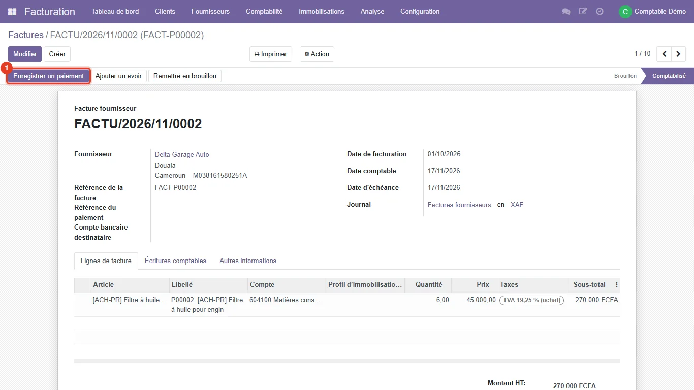
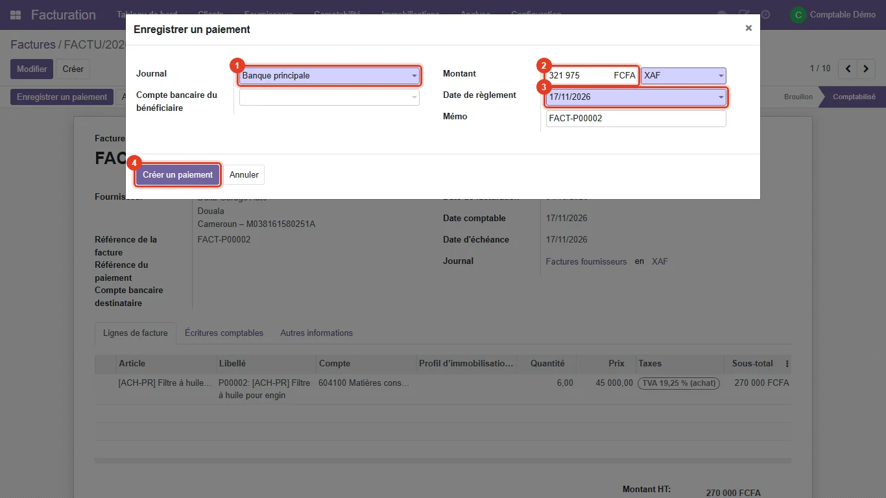

Objectif. Régler une facture et la marquer payée en une seule opération.
Où dans Odoo 15Facturation › Fournisseurs › Factures › Enregistrer un paiement


Ce que vous faites
- Ouvrez la facture fournisseur comptabilisée et cliquez sur Enregistrer un paiement (1).
- Journal (1 sur la 2e capture) : la banque ou la caisse utilisée.
- Montant (2) : le total, ou un montant partiel.
- Date (3) : celle du relevé bancaire, puis Créer un paiement (4).
À vérifier avant de continuer
0 / 2À éviter.
- Ne payez pas deux fois : vérifiez le statut de paiement avant.
Exercice sur la base de test
Payez la facture de Delta Garage Auto par la banque principale.